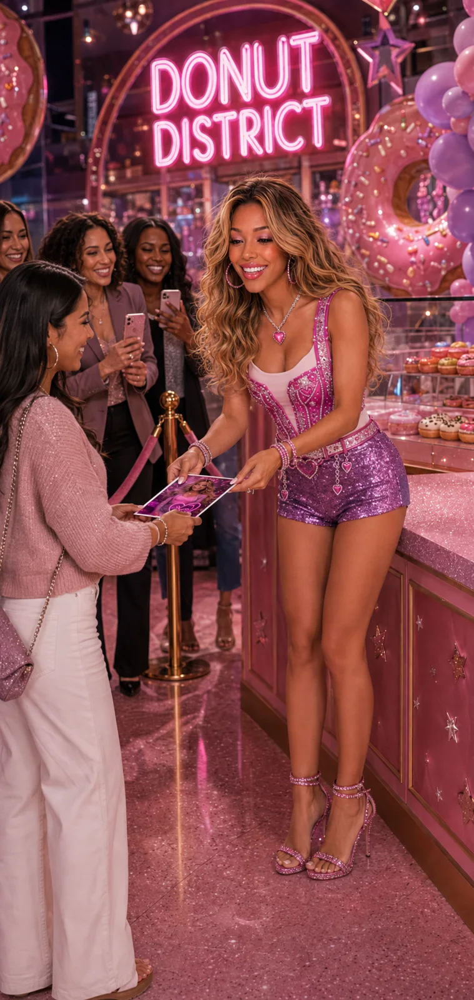
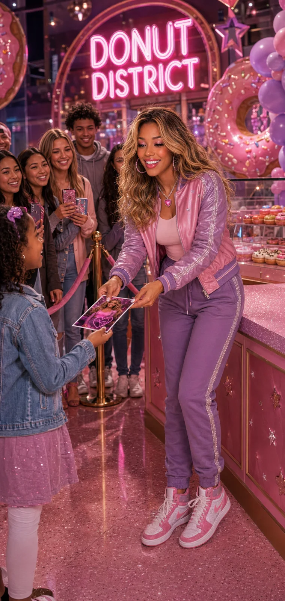

Fresh Treats
Discover rotating Sweetville donuts and limited district specials.

A glowing neighborhood for sweet treats, surprise meet-and-greets, fan photos, and little moments shared one Sweetie at a time.

A second look at the Donut District experience—casual, welcoming, and built around meeting the community.
Discover rotating Sweetville donuts and limited district specials.
A future home for fan moments, photos, and community memories.
Hidden collectibles and Sweet Packs can appear during special events.